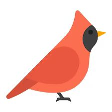

Message from Ancient People
In the distant future, you may live in a cyberpunk-like world. Towering skyscrapers pierce the smog-shrouded sky, and neon-lit cities radiate energy from relentless machines. In this desolate and mechanized future, lush forests, frolicking animals, and choppy ocean waves may just be a blur of the past.Here,I would like to leave some traces of past nature for you to recall and interact.
Simple Nature Interaction
